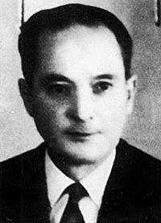
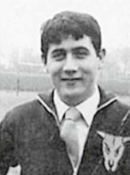
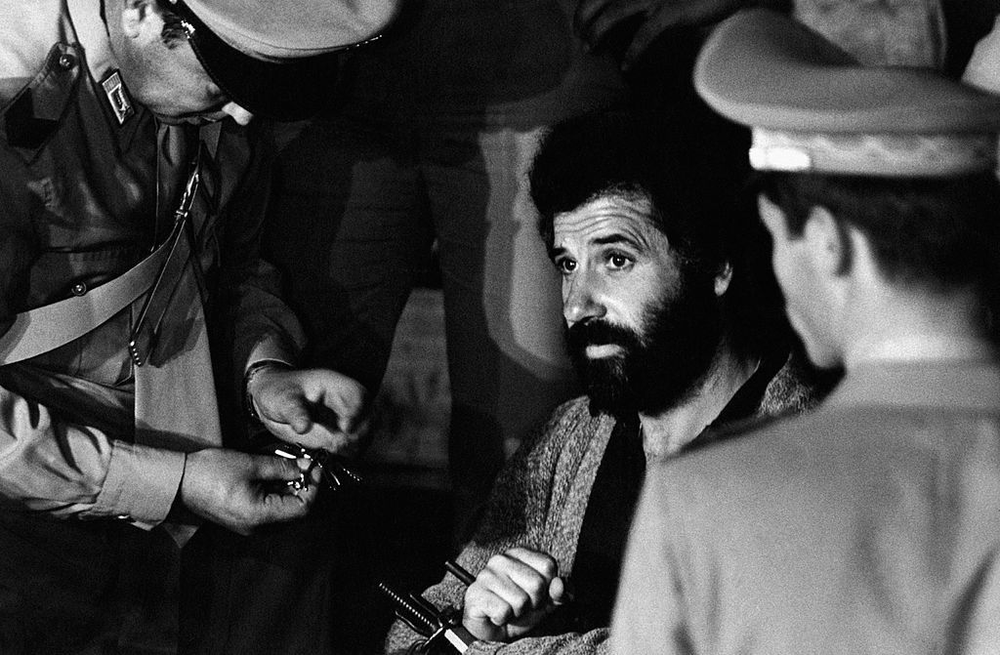
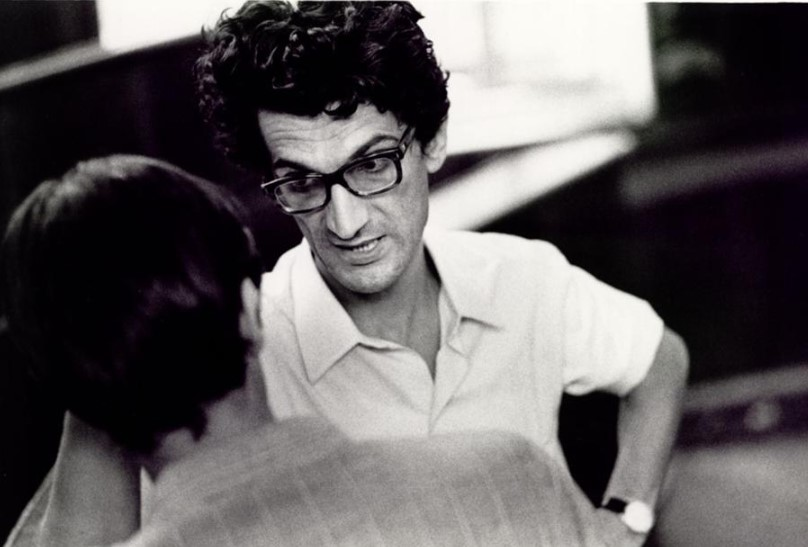
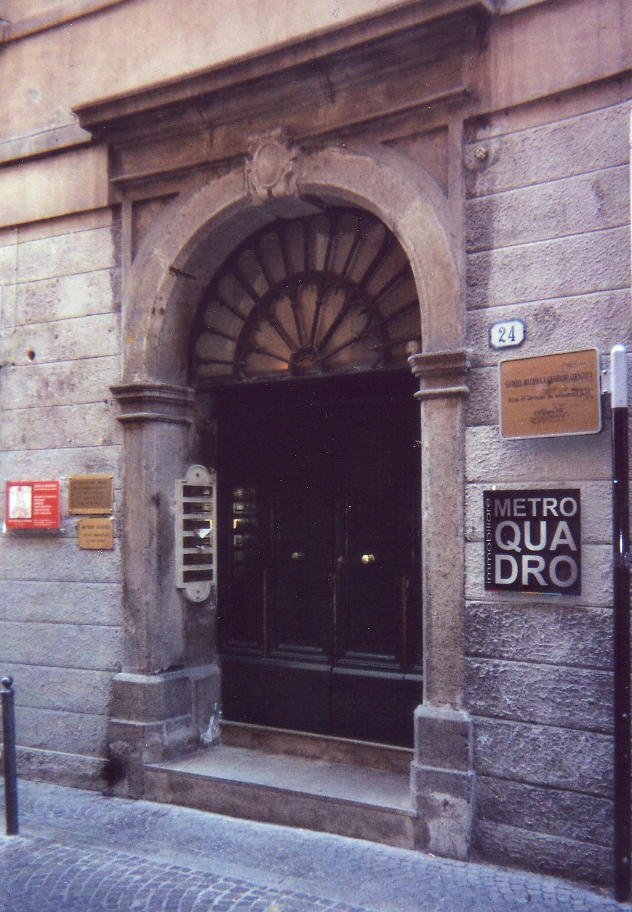

Giuseppe Mazzola

Biografia
Giuseppe Mazzola (Telgate, 21 aprile 1914 - Padova, 17 giugno 1974), ex Carabiniere in pensione, teneva la contabilità della sede patavina del Movimento Sociale Italiano in via Zabarella.
Viene ucciso, insieme al militante del MSI Graziano Giralucci, da un commando delle Brigate rosse recatosi nella sede in cerca di documenti sulle trame nere e sulla strage di Brescia.
Il 21 aprile 2010 gli viene concessa l'onorificenza di "vittima del terrorismo": «vittima civile per le idee e l'impegno morale per il quale è stato colpito nell'evento occorso in Padova quando venne uccido da un commando delle Brigate rosse mentre si trovava davanti ad una una sede dell'allora Msi il 17 giugno 1974».
Persone correlate

Graziano Giralucci
1944 - 1974

Renato Curcio
1941-

Antonio Negri
1933-
Eventi correlati

Assalto alla sede padovana del Movimento Sociale Italiano
17 giugno 1974